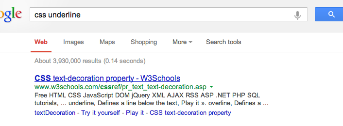

How CSS works
Let’s try one more analogy, just to explain how fluid HTML, CSS can be:
Think of a webpage as a play. Say, Shakespeare’s Romeo and Juliet:
The HTML is the script -- the lines the actors and actresses say as the play progresses. It’s “In Fair Verona, where we lay our scene”, it’s “What's in a name? that which we call a rose / By any other name would smell as sweet”.
The CSS is the costume and set design -- how everyone looks, and how the set looks. It’s the poofy shoulders, the cobblestone street, the oil lamps.
Two people can take the same content and style it very differently. In terms of Romeo and Juliet, you have the classic 1968 version, with swords, tunics and cobblestone streets.

And you have the 1996 version with Leonardo di Caprio, guns and suits. The two movies have the exact same lines, but they look and feel very different. That’s what CSS can do to HTML.
What CSS is used for
- Change color and background color
- Make text larger, bold and italic
- Use a different font altogether
- Add borders and spacing
- Make things big and small
How to make a CSS file
- Find the practice index.html file you made
- In the "practice" folder, make a folder named "css"
- Create a new file in that folder named styles.css. It's okay if it's empty.
Linking your HTML to the CSS
<html>
<head>
<title>Consider the lobster</title>
<!-- Our new CSS link: -->
<link rel="stylesheet" href="css/styles.css">
</head>
<body>
<h1>Consider the lobster</h1>
<p>The point is that <strong>lobsters</strong> are basically
giant sea-insects.</p>
</body>
</html>
Under the title tag, we can put in a link tag. -- You'll notice the link tag doesn't have a closing tag. Tags like this are called "empty elements"; they will never contain anything, they only have attributes.
Looking at what it says: "rel" stands for relation, and "href" stands for hypertext reference (remember how HTML stands for Hyper Text Markup Language? Yeah, you'll never have to think about that fact again.) So this essentially says, the reference I'm about to give you is a stylesheet, and here it is, at css/styles.css.
Okay, let's look at some CSS.
An example
<html>
<head>
<title>Consider the lobster</title>
<link rel="stylesheet" href="css/styles.css">
</head>
<body>
<h1>Consider the lobster</h1>
<p>The point is that <strong>lobsters</strong>
are basically giant sea-insects.</p>
</body>
</html>
h1 {
color: red;
}
Consider the lobster
The point is that lobsters are basically giant sea-insects.
This is called a CSS rule, and it has three parts:
- A selector, this is where you pick which tags to affect. Here, I've picked every h1.
- A property, this is where you pick what aspect of the tag to change. I want to change its color.
- And a value, which is what we set the property to. I picked red, 'cause you know, lobsters.
So now you know what these mean, here's another way to think about it. And it's how I think about it when I'm coding.
While writing CSS, go through these steps
- What am I trying to do?
I want my headline to be red - What is the element called?
Let's see, I'm using <h1>, it's what's in my HTML - What's the property I need to use?
Let's look up the CSS property for colors - What's the value I want?
Ha, red is just "red" (we can look this up too)
But it doesn't have to stop with one property.
h1 {
color: red;
font-family: ‘Comic Sans MS’;
}
Consider the lobster
The point is that lobsters are basically giant sea-insects.
So this says, all H1s should be the color red and use the font ‘Comic Sans MS’.
What if we want to change how the paragraphs look? We can add another rule.
h1 {
color: red;
font-family: ‘Comic Sans MS’;
}
p {
font-size: 18px;
}
Consider the lobster
The point is that lobsters are basically giant sea-insects.
So you're starting to get the hang of reading CSS. Before we let you write your own, we wanted to show you one more thing.
Colors. What if I don't want it to be generic red? How do I tell the Internet what color I want it to be? With numbers, or more specifically, hex codes.
h1 {
color: #FF0000;
}
These aren't even all the options for red. But if you ever are stuck, there are great tools out there for picking colors, let's google it together.
Looking up CSS
Don't know how to write a CSS property? Google it!
With your mentors:
- Practice making a CSS file, linking it, and writing CSS, following the instructions on the exercise sheet. Try out these properties:
- color, font-family, font-size, background-color
- Try looking up: font-weight, underline and italic
- Do exercise #4: Style the Onion article with CSS
So that’s the gist of it. We’ll let your mentors help you get some CSS on your page, and they’ll show you some more properties. When you’re feeling comfortable with that, we have an exercise for you to style your HTML page in a certain way.